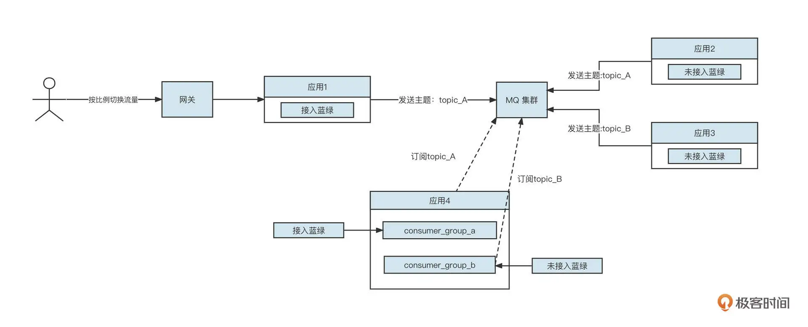
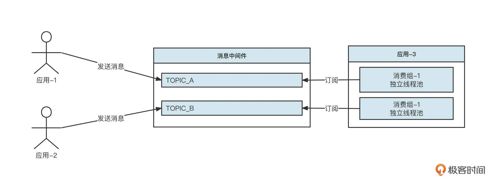
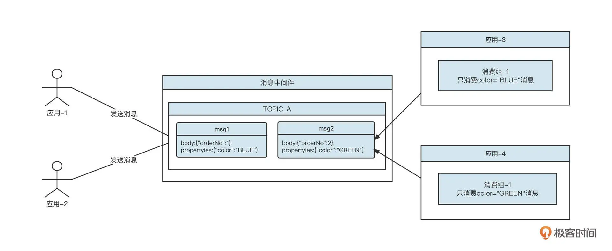
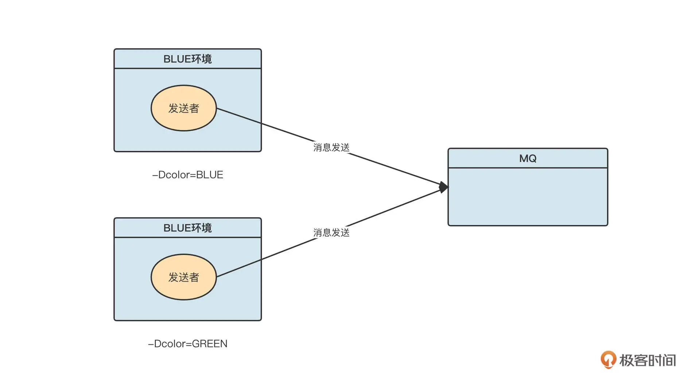
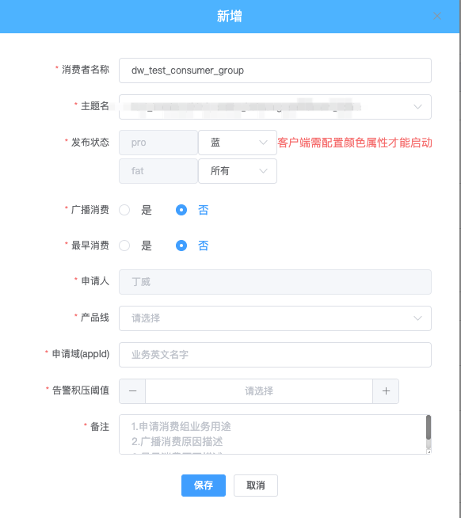
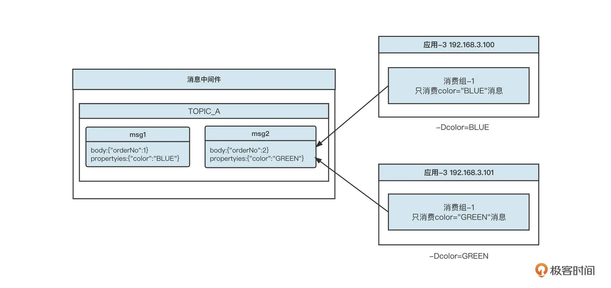
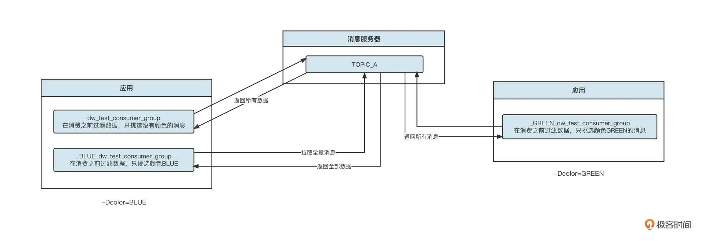
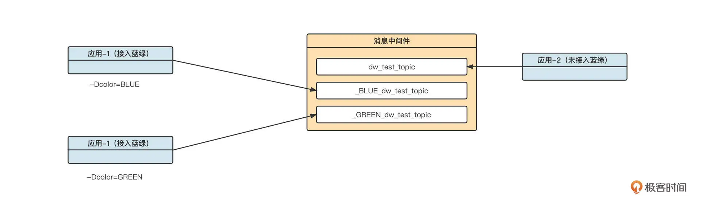
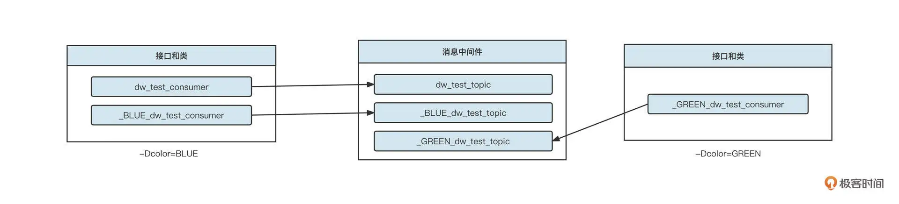

- 00 开篇词 为什么中间件对分布式架构体系来说这么重要？.md.html
- 01 中间件生态（上）：有哪些类型的中间件？.md.html
- 02 中间件生态（下）：同类型的中间件如何进行选型？.md.html
- 03 数组与链表：存储设计的基石有哪些？.md.html
- 04 红黑树：图解红黑树的构造过程与应用场景.md.html
- 05 多线程：多线程编程有哪些常见的设计模式？.md.html
- 06 锁：如何理解锁的同步阻塞队列与条件队列？.md.html
- 07 NIO：手撸一个简易的主从多Reactor线程模型.md.html
- 08 Netty：如何优雅地处理网络读写，制定网络通信协议？.md.html
- 08 加餐 中间件底层的通用设计理念.md.html
- 09 技术选型：如何选择微服务框架和注册中心？.md.html
- 10 设计原理：Dubbo核心设计原理剖析.md.html
- 11 案例：如何基于Dubbo进行网关设计？.md.html
- 12 案例：如何实现蓝绿发布？.md.html
- 13 技术选型：如何根据应用场景选择合适的消息中间件？.md.html
- 14 性能之道：RocketMQ与Kafka高性能设计对比.md.html
- 15 案例：消息中间件如何实现蓝绿？.md.html
- 16 案例：如何提升RocketMQ顺序消费性能？.md.html
- 17 运维：如何运维日均亿级的消息集群？.md.html
- 18 案例：如何排查RocketMQ消息发送超时故障？.md.html
- 19 案例：如何排查RocketMQ消息消费积压问题？.md.html
- 20 技术选型：分布式定时调度框架的功能和未来.md.html
- 21 设计理念：如何基于ZooKeeper设计准实时架构？.md.html
- 22 案例：使用分布式调度框架该考虑哪些问题？.md.html
- 23 案例：如何在生产环境进行全链路压测？.md.html
- 大咖助阵 高楼：我们应该如何学习中间件？.md.html
- 用户故事 学而时习之，不亦乐乎.md.html
- 用户故事 愿做技术的追梦人.md.html
- 用户故事 浪费时间也是为了珍惜时间.md.html
- 结束语 坚持不懈，越努力越幸运.md.html
- 捐赠
15 案例：消息中间件如何实现蓝绿？
你好，我是丁威。
我们这节课结合一个真实的生产环境案例，来看看消息中间件如何实现蓝绿发布。我们会提到消息中间件的设计背景和隔离机制，在此基础上探究基于消息属性和消息主题分别如何实现蓝绿发布。
设计背景
消息中间件在分布式架构体系中的应用非常广泛，要想实现蓝绿发布，只在微服务调用层面实现还远远不够。
在进行具体的方案设计之前，我们还是先来看一下我们这个项目中消息中间件的部署情况：

这里有四个应用，简单解释一下。
应用 1 支持蓝绿发布，并且处理完业务后，需要向消息中间件中的 topic_A 主题发送消息。
应用 2 不支持蓝绿发布，但同样需要在处理完业务后，向消息中间件中的 topic_A 发送消息。
应用 3 不支持蓝绿发布，需要处理完业务逻辑后，向消息中间件中的主题 topic-B 发送消息。
应用 4 中创建了两个消费组，其中 consumer_group_a 订阅 topicA，支持接入蓝绿；而 consumer_group_b 没有接入蓝绿。
这就是在设计蓝绿发布方案之前，我们这个项目的现状。
消息中间件隔离机制
那么怎么基于这一条件来设计和实施蓝绿方案呢？这又涉及到一个隔离机制的问题。因为无论是蓝绿发布还是全链路压测，需要着重解决的一个问题就是消息的隔离性。蓝绿发布的本质就是对消息进行分类，蓝颜色的消息只能被蓝颜色的消费者消费，绿颜色的消息只能被绿颜色的消费者消费。
消息中间件领域通常有“基于消息主题”和“基于消息属性”两种隔离机制。我们先来看第一种隔离机制，基于消息主题的物理隔离机制：

基于主题的隔离机制在消息服务端是分开存储的，属于物理层面的隔离。在消息消费端，由于应用使用不同的消费组进行消费，每一个消费组在物理层面也是互不影响的，每一个消费组有独立的线程池、消费进度等。
消息中间件中的另外一种隔离机制是基于消息属性的。例如，蓝绿两种颜色的消息使用的是同一个主题，但我们可以在消息中添加一个属性，标识这条消息的颜色。其存储示意图如下：

这样，不同属性的消息就可以共用一个主题了。消息发送端在发送消息时，会为消息设置相应的属性，将它存储到消息的属性中。然后单个消费端应用会创建蓝绿两个消费组，都订阅同一个主题。消费组拉取到消息后，需要先解码找到对应的消息属性，蓝颜色消费者只真正处理属性为 BLUE 的消息，那些属性为 GREEN 的消息会默认向服务端返回“消费成功”。这样就在客户端实现了消息过滤机制。
目前主流消息中间件的隔离机制都是基于消息属性的。在消息发送端为消息指定属性的示例代码如下：
//RocketMQ示例
DefaultMQProducer producer = new DefaultMQProducer("dw_test_mq_producer_group");
//这里省略producer对象的初始化代码
Message msg = new Message("TOPIC_A", "Hello Topic A".getBytes());
//设置用户定义的扩展属性，这里是RocketMQ提供的消息属性扩展机制
msg.putUserProperty("color", "BLUE");
producer.send( msg);
//Kafka示例
//kafka的生产者构建代码省略
Map<String, String> producerConfig = new HashMap<>();
KafkaProducer kafkaProducer = new KafkaProducer(producerConfig);
List<RecordHeader> recordHeaders = new ArrayList<>();
RecordHeader colorHeader = new RecordHeader("color", "GREEN".getBytes());
recordHeaders.add(colorHeader);
ProducerRecord record = new ProducerRecord("TOPIC_A", 0, null, "Hello Topic A".getBytes(),
recordHeaders.iterator());
kafkaProducer.send(record);
接下来我会基于这两种隔离机制分别给出蓝绿发布的设计方案。
基于消息属性的蓝绿设计方案
我们这个方案是基于 RocketMQ 展开的，Kafka 的设计方案类似。所以如果你使用的是 Kafka，完全可以进行知识迁移。
基于消息属性的隔离机制的一个显著的特点是，蓝绿消息使用的是同一个主题。因此我们需要在不同环境的生产者发送消息时，为消息设置不同的颜色。
和在微服务领域实现蓝绿发布一样，我们通过系统参数为应用设置所属环境：

通常每一家公司都会有一个统一的开发框架，会基于目前主流的 RocketMQ、Kafka 客户端进行封装，或者使用类似 rocketmq-spring 这样的开源类库。为了防止对业务代码进行侵入，通常会采用拦截器机制，拦截消息发送 API，然后在拦截器中根据系统参数，为消息设置对应的属性。从系统参数中获取颜色值的示例代码如下：
private static final String COLOR_SYS_PROP = "color";
private static final String COLOR_ENV = System.getProperty(COLOR_SYS_PROP, "");
当不同环境的消息发送者将消息发送到消息服务器后，消费端就要按颜色将消费分开了。
虽然消费端的隔离机制是通过不同的消费组来实现的，每一个消费组拥有自己独立的消费者线程池、消费进度，组与组之间互不影响。但是消费端不能简单粗暴地用系统参数来区分消费组的颜色，因为一个应用中可能存在多个消费组，这些消费组并不都开启了蓝绿机制。
所以基于消费组的蓝绿定义，首先需要在消费者的元信息中定义。例如，我们公司在申请消费组时，可以根据环境为消费组设置是否启用蓝绿机制。如下图所示：

蓝绿发布状态可选择：蓝、绿、所有。这里的“所有”表示消费组未开启蓝绿，选择“蓝”或“绿”都表示消费组开启蓝绿。
消费组是如何进行消息过滤的呢？我们来看下部署示意图：

我们看应用 3 会部署在蓝、绿两个环境，但是在原始的镜头项目代码中我们只会定义一个基本的消费组，例如 dw_test_consumer_group，蓝绿发布要求我们这套代码用不同的系统属性定义后，就能分别实现消息的过滤。
例如，我们在代码中定义一个消费组，示例代码如下（这段代码来源于中通快递开源的消息中间件运维平台，封装了 Kafka/RocketMQ 的消息发送与消息消费、可视化监控与告警）：
public void testSubscribe() {
Zms.subscribe("dw_test_consumer_group", new MessageListener() {
@Override
public MsgConsumedStatus onMessage(ConsumeMessage msg) {
System.out.println(new String(msg.getPayload()));
return MsgConsumedStatus.SUCCEED;
}
});
try {
Thread.sleep(1000 * 1000 * 1000);
} catch (InterruptedException e) {
e.printStackTrace();
}
}
那我们如何动态开启蓝绿发布机制呢？我总结了下面两个实现要点。
应用启动时，首先获取系统参数 color 的值（如果有设置），并根据设置的值改写原消费组的名称。如果 color 的值为 BLUE，那我们在调用 RocketMQ 底层 DefaultMqPushConsumer 时，传入的消费组名称为 _BLUE_dw_test_consumer_group；如果 color 的值为 GREEN，那最终会创建的消费组名称就是 _GREEN_dw_test_consumer_group。
消费者启动后开始处理消费，在真正调用用户定义的消息业务处理器（MessageListener）之前，需要将消息进行解码，然后提取消息属性中 color 的值，用 mqProColor 表示，如果 mqProColor 的值与系统参数 color 中的值相等，就调用用户定义的消息业务处理器。否则就认为消费成功，直接给 MQ 服务器返回“成功”，相当于跳过这条消息的处理。
这么乍一看，蓝颜色的消费者消费 color=BLUE 的消息，绿颜色的消费者消费 color=GREEN 的消息，这不是很“完美”地解决了蓝绿发布的问题了吗？
事实不是这样的。因为 topic 中发送的消息有可能不带颜色，例如应用 -1 需要发送消息到 TOPIC_A 中， 这个应用接入了蓝绿，会发送蓝色或者绿颜色的消息。但应用 -2 没有接入蓝绿，所以应用 -2 发送的消息是不包含颜色的。按照上面的方案，这部分消息将无法被消费，最终结果就是：消息丢失。
那怎么解决消息消费丢失的问题呢？我们可以在消费组元信息中定义不带颜色的消息由哪个环境来消费。
我在公司实践时，消费者的蓝绿发布状态有下面三个值。
所有： 表示该消费组未接入蓝绿。
蓝：表示该消费组接入蓝绿，并且消息属性中未带颜色的消息由蓝环境的消费者进行消费。
绿：表示该消费组接入蓝绿，并且消息属性中未带颜色的消息由绿环境的消费者进行消费。
这样定义了之后，应用启动时，如果消费者的蓝绿状态为蓝，我们会同时启动两个消费组，一个消费组为 _BLUE_dw_test_consumer_group，用来专门消费蓝颜色的消费者；另外一个消费组为 dw_test_consumer_group，用来消费不带颜色的消息。蓝环境的应用在启动时只会创建一个消费组，那就是 _GREEN_dw_test_consumer_group。
同时，我们还支持在蓝绿之间进行切换。如果将消费组的蓝绿状态由 BLUE 变为 GREEN，我们会将原本在蓝环境的 dw_test_consumer_group 关闭，然后在绿环境中新增一个 dw_test_consumer_group 消费组。这样，我们就在消息中间件层面实现了蓝绿发布。
基于消息主题的蓝绿设计方案
不过，基于消息属性的蓝绿发布机制存在一个比较严重的问题，那就是一旦开启了蓝绿发布，一份消息就会被多次拉取，这无形中增加了消息服务器的读取请求。示意图如下：

原本代码中只声明了一个消费组 dw_test_consumer_group，但我们引入蓝绿发布机制之后，会创建三个消费组，读取流量是原来的三倍，这会给服务端带来较大压力。
造成读流量放大的主要原因是，蓝绿消息在物理存储上并未实现真正隔离，仍然需要在消费端进行过滤。既然如此，如果我们在发送消息的时候就对消息进行隔离，是不是可以避免这种情况？
这就要说到另外一种蓝绿设计方案了，它使用的是基于主题的消息隔离机制。
这种机制在发送消息时，就根据发送者所在的环境将消息发送到不同的主题中。示意图如下：

在代码层面，要在发送端改变消息发送的主题名称非常简单。只需要拦截消息发送方法，根据系统变量 color 的值改写主题的名称就可以了。但是在实践过程中，我们还要避免发送方法的嵌套调用，避免主题名称在一次发送过程中多次被改写，所以在改写主题名称之前，我们还要对代码进行判断：
public static String renameTopicName(String topicName) {
String color = System.getProperty("color", "");
if("BLUE".equals(color) && !topicName.startsWith("_BLUE_")) {
return "_BLUE_" + topicName;
} else if("GREEN".equals(color) && !topicName.startsWith("GREEN")) {
return "GREEN" + topicName;
}
return topicName;
}
之后，消费端的隔离机制仍然是为不同的环境创建不同的消费组：

这样，每一个消费组就只会拉取符合条件的消息。因为所有的消息拉取都是有效拉取，所以基于消息隔离而产生的弊端就解决了。
总结
我们这节课首先结合消息中间件在生产环境的部署情况，引出了蓝绿设计需要解决的具体问题，然后介绍了实现蓝绿的两种方案。
我认为，实现蓝绿的关键其实最终都落在了“如何有效隔离消息”这个问题上。
基于消息属性的隔离，是在发送端使用一个主题，在每一条消息中添加一个属性 color 来存储消息的颜色，而消费端采取不同的消费组来消费消息。其中，蓝颜色的消息由蓝消费组消费，绿颜色的消息由绿消费组消费，没有颜色的消息由默认消费组来消费。这本质上是在消费端将数据从服务端全量拉取下来，然后在消费端进行了一层过滤，各个消费组都会读取到很多无效数据，无形中放大了拉取消息的调用次数。
而基于主题的隔离机制，是在消息发送时就将消息分别发送到不同的主题中，在消费端对各个消费组进行分工。蓝颜色的消费组只订阅蓝颜色主题，绿颜色的消费者只订阅绿颜色的主题，这就实现了有针对性的消费，效率更高。
课后题
学完今天的内容，请你思考下面两个问题。
基于消息属性的蓝绿发布机制，支持从“蓝”或“绿”切换到“所有”吗？也就是说，如果原本消费组开启了蓝绿发布，现在又想抛弃蓝绿发布，能不能行呢？这样做存在什么问题？
基于主题的过滤机制可以避免读流量的放大，但这个方案也不是完美的，你认为基于主题来实现蓝绿发布存在什么问题？哪些场景适合使用基于主题的蓝绿发布？
欢迎你在留言区与我交流讨论，我们下节课见！
© 2019 - 2023 Liangliang Lee. Powered by gin and hexo-theme-book.